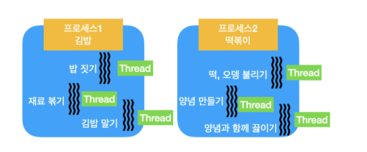

오늘은 아이펠 Fundamental 노드 30번을 공부하고 공부한 내용을 포스팅해보았습니다.
깃허브 주소 : https://github.com/Nega0619/Aiffel_Fundamental_nodes/blob/main/%5Bfd_30%5D%20Computer%20Power%20UP.ipynb
AIFFEL LMS
문제시 연락 부탁드립니다. :)
자원을 최적화하는 법, 병렬 컴퓨팅, 분산컴퓨팅의 개념은 빅데이터를 다루기 위해선 꼭 알고있어야 하는 중요한 개념들입니다. 한정된 컴퓨팅 자원을 활용하여 여러가지 일을 효율적으로 진행할 수 있도록 해주는 것을 멀티태스킹이라고 합니다. 멀티태스킹은 동시성 병렬성을 가지고 있으며 다음 글을 참고하니 이해하기 쉬웠습니다.
하나의 Processor가 여러가지 task를 동시에 수행하는 개념
즉, processor가 특정 순간에 1가지 task만을 수행하지만, 라면을 끓일때 물 끓기까지 기다리는 것 처럼 다른 task를 수행할 수 있는 시간에 task를 전환하여 task를 여러개 수행하는 것 처럼 보이게 하는 것입니다.
유사한 task를 여러 processor가 동시에 수행하는 개념
병렬성의 효율을 극대화 시키기 위해서는 동시성이 같이 요구되어야 한다.
동기와 비동기는 동시성에서 주로 다루게 되는 개념입니다.
컴퓨터에서 어떤 일을 바로 하지 못하고 대기해야 하는 경우를 일컬어 바운드(bound)되었다.라는 표현을 쓴다고 합니다.
바운드 되었을때, 앞 작업이 기다리기를 하염없이 기다리다 다음 작업을 시작하는 것을 동기(synchronize)라고 하고, 바운드 되고 있는 작업을 기다리는 동안 다른 일을 처리하는 것을 비동기(asynchronize)라고 합니다.
컴퓨터가 일을 수행하면서 뭔가를 기다릴 때, 즉 속도 제한이 걸리는 경우는 2가지입니다.
프로세스란 프로그램을 구동해 프로그램 자체와 프로그램의 상태가 메모리상에서 실행되는 작업의 단위입니다. 하나의 프로그램을 실행할 때, 운영체제는 프로세스를 한개를 생성합니다.
프로세스는 운영체제의 커널(Kernel)에서 시스템 자원(CPU, 메모리, 디스크) 과 자료구조를 이용합니다.
스레드(thread)란 어떠한 프로그램 내에서 즉, 프로세스 내에서 실행되는 흐름의 단위
예를 들어 요리를 만드는 프로그램이 존재한다고 한다면, 요리사는 프로세스, 재료썰기, 밥짓기, 볶기 등의 작업을 스레드에 비유할 수 있습니다. 같은 작업을 빠르게 처리하기 위해 여러 개의 스레드를 생성하기도 합니다.
각각의 작업을 할 때 도마나 불판 등의 주방 공간은 공유되지만 요리사 각자의 주방 공간은 공유하지 않습니다. 마찬가지로 프로세스도 자신만의 전용 메모리 공간 (Heap)을 가집니다.그렇기때문에 스레드들도 메모리 공간자체는 공유 하지만 다른 프로세스와 공유하지는 않습니다.

프로파일링이란 것은, 코드에서 시스템의 어느 부분이 느린지 혹은 어디에서 RAM을 많이 사용하고 있는지 확인하고 싶을때 사용하는 기법입니다.
프로파일링은 애플리케이션에서 자원이 가장 집중되는 지점을 정밀하게 찾아내는 기법입니다.
프로파일링은 애플리케이션을 실행시키고 각각의 함수 실행 시간을 재는 프로그램입니다.
프로파일링은 코드의 병목(bottleneck)을 찾아내고 성능을 측정해주는 도구입니다.
파이썬에서 멀티스레드 구현은 threading 모듈을 이용합니다.
생성방법 1. 클래스에 Thread 상속받기
Class Delivery(Thread):
def order(self):
print("배달이요")
생성방법 2. Thread 인스턴스화
t = Thread(target=함수이름, args=())
from threading import *
from time import sleep
Stopped = False
def worker(work, sleep_sec): # 일꾼 스레드입니다.
while not Stopped: # 그만 하라고 할때까지
print('do ', work) # 시키는 일을 하고
sleep(sleep_sec) # 잠깐 쉽니다.
print('retired..') # 언젠가 이 굴레를 벗어나면, 은퇴할 때가 오겠지요?
t = Thread(target=worker, args=('Overwork', 3)) # 일꾼 스레드를 하나 생성합니다. 열심히 일하고 3초간 쉽니다.
t.start() # 일꾼, 이제 일을 해야지? 😈
스레드 멈추기
t.terminate() 메소드는 없으므로 멈추려면 flag를 체크해서 멈추도록 합니다.
# 이 코드 블럭을 실행하기 전까지는 일꾼 스레드는 종료하지 않습니다.
Stopped = True # 일꾼 일 그만하라고 세팅해 줍시다.
t.join() # 일꾼 스레드가 종료할때까지 기다립니다.
print('worker is gone.')
스레드 생성확인
class Delivery(Thread):
def order(self):
print("배달이요")
work2 = Delivery()
print(work2.run)
실행결과
<bound method Delivery.run of <Delivery(Thread-21, initial)»
생성 방법 1. Process 인스턴스 생성
import multiprocessing as mp
def delivery():
print('delivering...')
p = mp.Process(target=delivery, args=())
p.start()
프로세스 사용
p = mp.Process(target=delivery, args=())
p.start() # 프로세스 시작
p.join() # 실제 종료까지 기다림 (필요시에만 사용)
p.terminate() # 프로세스 종료
스레드나 프로세느는 사용할때 단독으로 사용하고 종료해주지 않고 스레드 / 프로세스 풀을 사용해서 생성합니다.
“풀(Pool)”은 스레드나 프로세스들로 가득 찬 풀장입니다. 스레드 풀을 만들면 각각의 태스크들에 대해서 자동으로 스레드들을 할당하고 종료합니다.
ThreadPoolExecutor , ProcessPoolExecutor클래스를 이용하는 방법Executor 객체ThreadPoolExecutor 객체ProcessPoolExecutor 객체Future 객체Executor 객체를 이용하면 스레드 생성, 시작, 조인 같은 작업을 할 때, with 컨텍스트 관리자와 같은 방법으로 가독성 높은 코드를 구현할 수 있습니다.(프로세스도 동일)
with ThreadPoolExecutor() as executor:
future = executor.submit(함수이름, 인자)
multiprocessing.Pool.map을 이용하여 여러 개의 프로세스에 특정한 함수를 매핑해 병렬처리하도록 구현하는 방법이 널리 사용
with Pool() as pool:
result = pool.map(double, [1, 2, 3, 4, 5])
print(result)
위의 메소드를 실행하면 double(i)이라는 메소드가 pool을 통해서 각각 다른 pid를 가진 프로세스들 위에 multiprocess로 실행되었다는 것을 확인할 수 있습니다.
깃허브 참고